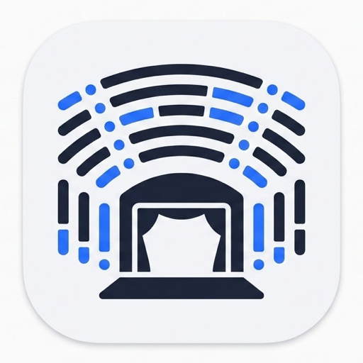

PAC Seating
Assign Class
Ban Seat
Teacher Seat
−
+
Print / PDF
🚧 Export PNG (WIP)
Export JSON
Import JSON
Clear Assignments
Clear Teacher Seats
📐 Calibrate
✨ AI Generate
📋 Preset Classes
Describe what you want:
Generate
+ Create Ticked Classes
Auto-arrange the ticked classes in the sidebar (checkbox next to each):
↕ Auto-Arrange
Calibration Mode:
Load URL
Upload Image…
Shift+click seat(s) to select:
+ Add Seats
Remove Selected (
0
)
↶ Undo
↷ Redo
Reset to Default
Drag seats to line them up with the map, then export.
Export Coordinates JSON
Classes
🗑 Select to Delete
Delete Selected (
0
)
🗑 Delete All Classes
+ Add Class
Teacher seat
Banned seat
Assign class
Remove assignment
Or create a new class
Pick a color
Cancel
Create & Assign
Choose color
Cancel
Apply